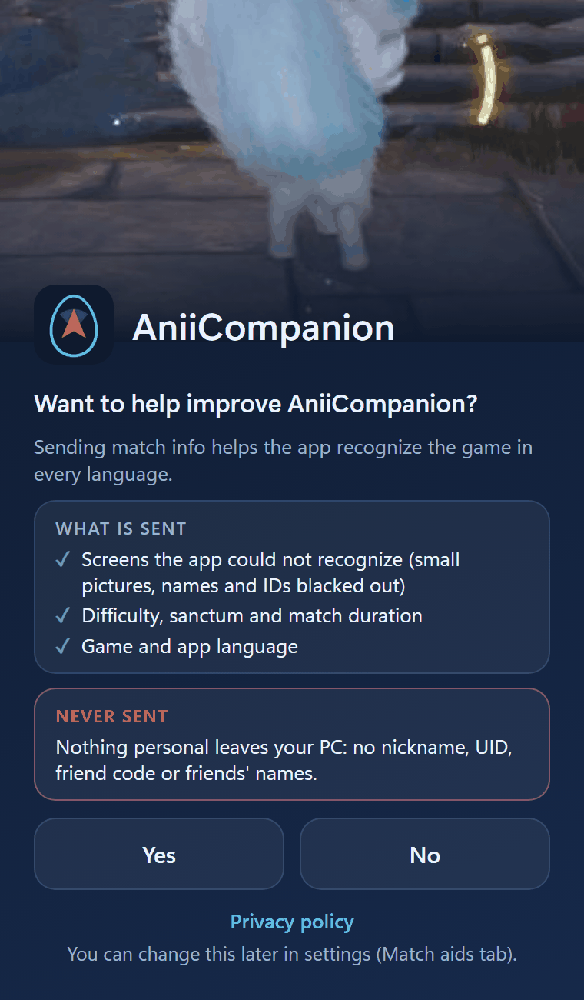

Privacy
Today the app sends no match data over the internet. When it does, it will only be if you allow it.
Summary
The short version
For now the app sends no match data over the internet. The first time, it only asks whether you want to help improve AniiCompanion, saves your answer, and keeps the collected data on your PC only. When sending is turned on in a new version, only people who answered Yes will start sending; people who answered No keep sending nothing. This page will be updated first to say what changes. In automatic sending, your nickname, UID, codes and friends’ names never leave your PC.
Last updated October 15, 2026.
Security
Limits of the app
It works like a screen recording.
| The app does | The app never does |
|---|---|
| Looks at the image of the game window, like a screenshot | Reads the game’s memory |
| Finds you on the minimap | Injects code into the game |
| Draws the map on top of the game | Uses mods |
| Keeps settings and logs on your computer | Asks for an account or login |
| Checks the signature of every update | Sends match data without your Yes |
Aniimo has an anti-cheat system. We cannot speak for the game’s developers, and we promise nothing. Using the app is your decision, at your own risk.
Internet
What leaves your PC
The app uses the internet for these five things.
| Updates | Checks GitHub for a new version. Before installing, it checks the author’s signature and the file’s SHA-256. |
|---|---|
| Maps | None. The maps already come inside the app; it downloads no maps and does not connect to any map site. |
| Online mode | Only if you use it, and only with friends you added. Details below. |
| Match data | Nothing today: automatic sending is off and the collected data stays on your PC. When it is turned on, only if you said Yes. What would go, where, and why. |
| Report | Nothing. The button only creates a file on your computer; it only leaves your PC if you send it yourself. Details. |
Match data
Helping the project with data from your matches
Optional. Sending is off today; what follows applies once it is turned on.
Current state: the app sends nothing automatically. It asks “Want to help improve AniiCompanion?” the first time and saves your answer, and the collected data stays on your PC only. When sending is turned on in a new version (together with the server going live), people who answered Yes will start sending automatically, and this page will be updated first. People who answered No keep sending nothing. Until then, the only way this data reaches the project is if you use “Save report” and send the file yourself.
Every match produces a small summary on your computer. Once sending is active and you have allowed it, the app will send it after the match ends. If you said No, the summary stays here and nothing leaves.
What will be sent (once sending is active)
| Languages | The app language, the Windows language, the text recognition (OCR) languages, and the game language, which the app infers from what it read on screen. It shows which languages the app already handles well. |
|---|---|
| Unrecognized text | When the app reads text on a screen it knows but cannot match, it sends that text (up to 500 characters, together with the picture of that screen; at most 5 per match). It helps us find new screens and translations. |
| Screen crops | Small photos (JPEG, up to 800 px on a side, 80 KB and at most 5 per match) of fixed screen areas where the game shows no names. Any name, UID or code the app recognizes is painted black before the image leaves your PC. They show how each screen looks in each language. |
| Match details | Difficulty, sanctum, duration, and how the match ended (results screen, XP screen, or neither). It helps us understand how matches go. |
| App version | So we know which version the data came from. |
What never leaves your PC in automatic sending
- Your nickname, your UID and your friend code.
- Friends’ names.
- Folders on your computer and your Windows user name.
- Your IP address. The server uses it only as a hash with a daily salt, to cap each installation at 20 uploads a day; the number is never stored.
The limit of the blackout
The blackout relies on text recognition. A name in a stylized font that it cannot read could slip through. That is why we only crop areas where the game shows no names, checked on real matches. If an area shows a name, it comes off the crop list.

The first-run question.
Your permission
The first time, the app asks: Want to help improve AniiCompanion? You answer Yes or No, and the app saves the answer. While sending is off, settings show only the Send match data switch and the Privacy policy link. To change your mind, use that switch; turning it off removes no feature.
Send code and deleting your data
Nothing has been sent yet, so there is nothing on a server to delete. When sending is turned on, it will need no account: the app will recognize your installation by a key made on your PC and show a short code for it in settings, in the Sending code field (8 characters, e.g. a3f9c27e). This code is random and does not say who you are; under the law (LGPD and GDPR) it counts as pseudonymised data, and it is only used to delete your uploads and for the daily limit. The Sending code field and the Delete my data button only appear in that version. With the button, the app will ask first (“Delete everything this app has sent?”) and delete everything your installation has sent. You will also be able to ask by e-mail with the code (see Your rights).
Once sending is active, whatever is on the server will be deleted automatically after 180 days.
Where it lives and who reads it
Today the collected data stays on your PC only. Once sending is active, it will go to Cloudflare (server and D1 database); until sent, uploads will wait in a local queue of up to 50 on your PC. Only the project team will read it, for analysis. Nothing will be public and nothing will be sold.
What for
To improve screen recognition in every language and to understand how matches go.
Legal basis
Automatic sending, once it exists, will rest on your consent: Brazil’s LGPD (Law 13,709/2018), art. 7, I, and GDPR art. 6(1)(a). You can withdraw it whenever you like, and what was sent earlier can be deleted.
Your rights
You can ask for access, correction and deletion of your data, and withdraw your consent. Write to aniicompanion.help@gmail.com and, if sending is already active, include your send code.
Friends
Online mode: who sees what
It only does anything with friends you added. There is no account.
Public meeting servers
Friends find each other through public Nostr relays.
- They can see your IP address and the time.
- They cannot see the content, which is encrypted.
Direct connection
When the two apps connect computer to computer:
- Your friend sees your home IP address, and you see theirs.
- Only add people you know.
People in your party see your dot on their map with the name you chose, plus the nests, eggs and chests you found. Nobody else. This does not depend on the match data above.
Report
“Save report” sends nothing
The button creates a .zip in your Downloads folder, with the app logs, a few screenshots of the game window (other windows open at the time may appear in them) and the collected data: the match summary and the screen crops with the blackouts.
The app logs may contain your nickname, read from the screen by the app. That is why the file only leaves your computer if you send it yourself, and it is best to send it only to people you trust. Today this is the only way the data reaches the project. What is inside.
Download
Check that your download is genuine
Every release publishes the SHA-256 of its zip. Compare it with the file you downloaded. If they differ, do not use it.
How to check the SHA-256Shared map: nest chances
It does not exist yet. The idea is to work out the chance of each nest from everyone’s matches, using the sanctum floor plan, the difficulty, where nests showed up, and the numbers on the end-of-match screen.
None of that is sent today. When it exists, it will depend on the same Yes and on sending being active, and this page will be updated first to say exactly what changes.